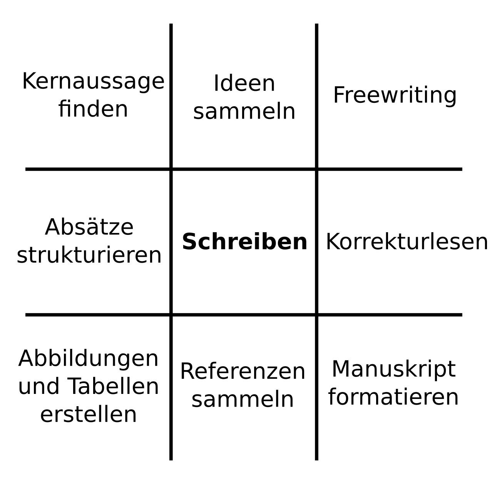

Nine Ways to do Scientific Writing
When I was writing my first paper, I thought writing meant sitting in front of a keyboard, starting to type and continuing until the paper was done. Not surprisingly, frequently this approach did not work, and I experienced what is called a writers block. It took me years to realize that writing as a process is much more complex. Writing a paper includes many activities, only some of which involve typing. Here are nine of them:

- Find a core message - What is your article trying to say? Many writing guides recommend you can have only one message per article. How would you summarize your paper in one sentence?
- Collect ideas - To write reasonable science, you need raw material: facts, observations, references. Collecting your raw material means reading literature, reviewing your own notes and brainstorming points you could write.
- Freewriting - A way to generate text from scratch. Set a timer to 10 minutes. Start writing. Do not stop before time runs out. Freewriting means you write a lot of crap. You probably will anyway. But Freewriting gets you through the crap stage faster.
- Structure paragraphs - Systematicall construct your text in a top-down fashion. Divide a section into paragraphs. For each paragraph construct an opening and a closing sentence. Add a few main points. Then move to the next paragraph etc.
- Writing - Sitting at the keyboard and wrestling with single words and sentences is still part of the game. Make sure yo have a coffee to sip, a cat to stroke, a pen to gnaw.
- Proofread - Indispensable when quality is to come your way. Read your text. Edit. Read it again. Check grammar. Check flow between paragraphs. Double-check facts.
- Create figures - Many scientists recommend to start with the figures. If your figures tell a coherent story, the text in between will be easier to write.
- Collect references - You could argue that writing starts when you start collecting literature. Make sure you use a reference manager as soon as you have more than three references. It doesn't matter whether you are using Mendeley, EndNote, BibTeX or a text file with PMIDs. All four will save you hours.
- Format the manuscript - make everything look nice and make sure you follow the guidelines of the journal by the letter. Once you arrive here, you are rolling downhill.
Switch activities to overcome writers' block
You can spend your time in at least these nine ways while writing a paper. Before your manuscript is finished, you will move through each square of the diagram a few times. Realizing that gives you a recipe against writers' block: If what you are doing doesn't work out, switch to a different activity.